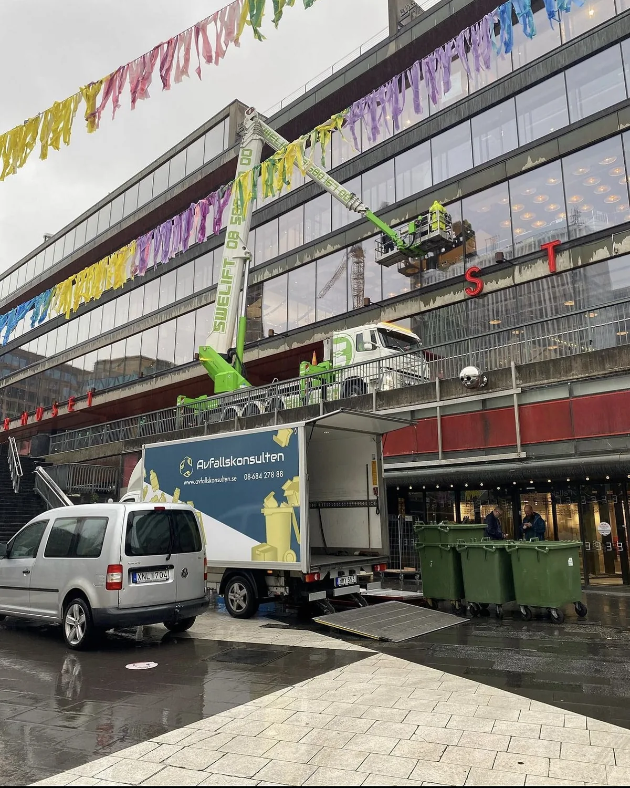

Återvinning för företag
Oavsett företagets storlek och verksamhet är effektiv avfallshantering viktigt. Många betalar onödigt höga kostnader för lösningar som inte riktigt fungerar. Vi ser till att ni kan fokusera på det ni gör bäst, er verksamhet, medan vi tar hand om resten.
-
4,9 av 5 på Reco231 omdömen från kunder
-
Kostnadsfritt platsbesökVi kommer ut och tittar innan vi lämnar pris
-
Fast pris per hämtningKärl och skyltar ingår, inga tillägg
-
Egen personal och egna bilarSamma chaufförer som känner er fastighet
Vad våra kunder säger om oss
Avfallshantering för företag
Vi som återvinningsföretag i Stockholm förstår vikten av effektiv avfallshantering för ett framgångsrikt företag. Vi erbjuder skräddarsydda lösningar för att minska miljöpåverkan, spara kostnader och förbättra arbetsmiljön.
Hämtning och transport av avfall
Vi hämtar ditt avfall vid tider som passar er och transporterar det säkert för vidare sortering och återvinning. Med flexibla hämtningsintervall hanterar vi alla typer av avfall, från blandat avfall till farligt avfall.
Sortering och återvinning
Genom noggrann sortering maximerar vi återvinningen och minimerar deponiavfallet. Vår utbildade personal säkerställer en effektiv och miljövänlig process.
Farligt avfall
Vi hanterar farligt avfall enligt alla lagkrav med den utrustning och expertis som krävs för en trygg och ansvarsfull behandling.
Byggavfall
Vi hämtar och återvinner byggavfall och kan även utföra sortering och återvinning på plats vid behov.
Elektronikskrot
Elektronikavfall hanteras miljövänligt och enligt gällande lagar, med fokus på återvinning av alla komponenter.
Kontorsavfall
Vi hanterar kontorsavfall och erbjuder även säker destruktion av sekretessbelagt material.
Kontakta oss för en lösning anpassad till just ert företags behov!


Ansvarsfull återvinning för företag
Vi tar hand om din återvinning för företag med ansvar och hållbarhet i fokus:
- Sortering och återvinning: Vi sorterar avfallet i olika fraktioner och återvinner så mycket som möjligt.
- Behandling av farligt avfall: Vi hanterar farligt avfall säkert och enligt gällande lagar och förordningar.
- Energiåtervinning: Vi samarbetar med anläggningar som energiåtervinner avfall på ett miljövänligt sätt.
För att underlätta återvinning är det viktigt med en avfallshantering anpassad till er verksamhet. Vi erbjuder källsorteringsmöbler, sopkärl, säckar och containrar. Kontakta oss för ett kostnadsfritt platsbesök där vi ser över era behov och nuvarande kostnader.
Kontakta oss för hjälp med er avfallshantering!
Fördelar med återvinning för företag
Återvinning för företag för med sig en mängd fördelar, både ekonomiskt och miljömässigt. Genom att införa ett effektivt återvinningssystem kan företag minska sina avfallshanteringskostnader, samtidigt som de minskar sin miljöpåverkan. Återvinning gör det möjligt att spara resurser och energi genom att omvandla avfall till nya produkter, vilket bidrar till en cirkulär ekonomi. Dessutom kan ett företag som prioriterar återvinning stärka sitt varumärke och sitt anseende, vilket gör att det attraherar både kunder och medarbetare som värderar hållbarhet.

Vanliga frågor kring Avfallskonsultens återvinning för företag
Vilka typer av avfall hämtar ni?
Vi hämtar en bred variation av avfall inklusive hushållsavfall, pappersprodukter, plast, glas, metall och organiskt avfall. Vi hanterar också specialavfall som elektronik och batterier.
Hur ofta hämtar ni återvinning?
Vi erbjuder flexibla hämtningsscheman som kan anpassas efter dina behov, med allt från veckovis till månatliga hämtningsfrekvenser. Kontakta oss för att skapa ett schema som passar dig bäst.
Behöver jag sortera mitt avfall innan ni hämtar det?
Ja, vi ber dig att sortera ditt avfall i olika kategorier som papper, plast, glas och metall innan hämtning. Detta hjälper oss att effektivt och miljövänligt hantera återvinningen.
Vad händer med det återvunna avfallet?
Efter att vi hämtat ditt avfall transporteras det till våra återvinningsanläggningar där det sorteras och bearbetas för återanvändning. Materialen återvinns till nya produkter, vilket minskar behovet av nya råvaror och bidrar till en hållbar framtid.
Kan ni erbjuda en skräddarsydd lösning för återvinning för vårt företag?
Ja, vi kan skapa en anpassad återvinningslösning som uppfyller ditt företags specifika behov och krav. Vårt team arbetar nära dig för att utveckla en effektiv och hållbar återvinningsstrategi.
Berätta om er fastighet, så återkommer vi med pris
Fyll i formuläret så hör vi av oss inom en arbetsdag, oftast samma dag.
- Kostnadsfritt platsbesök
- Fast pris per hämtning, kärl och skyltar ingår
- Egen personal och egna bilar
Vill du hellre ringa?08-684 278 88